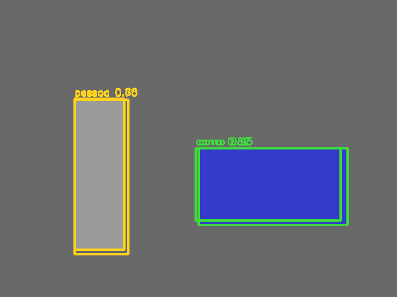
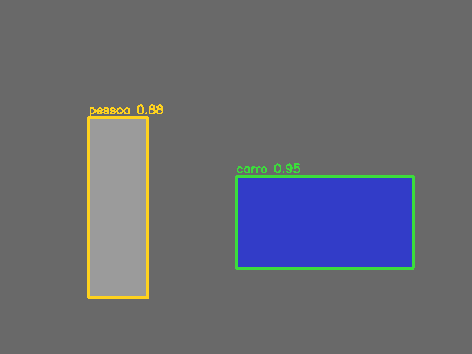

11. YOLO, caixas, IoU e NMS¶
O que você aprenderá¶
Neste capítulo, você aprenderá a interpretar o resultado de um detector de objetos: muitas hipóteses de caixas, classes e escores precisam ser transformadas em uma saída coerente. O foco não será apenas “rodar YOLO”, mas entender a matemática e a lógica do pós-processamento.
Ao final, deverá conseguir:
- diferenciar classificação e detecção;
- compreender a ideia de detecção em uma passagem;
- interpretar caixas em diferentes formatos;
- converter centro/tamanho em cantos;
- compreender coordenadas normalizadas;
- calcular interseção e união;
- calcular IoU;
- interpretar IoU geometricamente;
- compreender por que um detector gera caixas duplicadas;
- explicar NMS passo a passo;
- aplicar NMS por classe;
- analisar efeitos do limiar de confiança;
- analisar efeitos do limiar de IoU;
- compreender limitações do NMS clássico.
YOLO reformulou detecção como um problema de regressão densa sobre a imagem, compartilhando computação em uma única rede (REDMON et al., 2016). Embora versões modernas tenham mudado bastante, compreender caixas, IoU e supressão continua essencial.
11.1 Classificação versus detecção¶
Classificação responde:
“O que há nesta imagem?”
Detecção responde:
“Quais objetos existem e onde estão?”
Uma detecção precisa, no mínimo, representar:
11.2 Por que surgem muitas hipóteses?¶
Detectores densos avaliam muitas posições e escalas. Várias regiões podem responder ao mesmo objeto.
Assim, um carro real pode gerar:
com grande sobreposição.
Precisamos escolher uma representação final.
Analogia: várias testemunhas apontando o mesmo objeto¶
Três pessoas podem desenhar caixas ligeiramente diferentes ao redor do mesmo carro. O pós-processamento deve identificar que estão falando do mesmo objeto.
11.3 Formatos de caixa¶
Cantos¶
Topo esquerdo + tamanho¶
Centro + tamanho¶
Nunca misture formatos sem converter explicitamente.
11.4 Centro para cantos¶
Exemplo 1¶
def centro_para_cantos(cx, cy, w, h):
x1 = cx - w / 2
y1 = cy - h / 2
x2 = cx + w / 2
y2 = cy + h / 2
return x1, y1, x2, y2
11.5 Coordenadas normalizadas¶
Algumas saídas usam valores entre 0 e 1.
Se:
em imagem 800 × 600:
Sempre identifique em qual sistema de coordenadas a rede trabalha.
11.6 Interseção entre duas caixas¶
Para caixas A e B em (x1,y1,x2,y2):
A largura de interseção é:
A altura:
Se não houver sobreposição, pelo menos uma dimensão será zero.
11.7 Área de interseção e união¶
intersecao = iw * ih
area_a = max(0, ax2 - ax1) * max(0, ay2 - ay1)
area_b = max(0, bx2 - bx1) * max(0, by2 - by1)
uniao = area_a + area_b - intersecao
Subtraímos a interseção porque ela foi contada duas vezes.
11.8 IoU¶
Intersection over Union:
Interpretação¶
Exemplo 2¶
def iou(a, b):
ax1, ay1, ax2, ay2 = a
bx1, by1, bx2, by2 = b
ix1 = max(ax1, bx1)
iy1 = max(ay1, by1)
ix2 = min(ax2, bx2)
iy2 = min(ay2, by2)
iw = max(0.0, ix2 - ix1)
ih = max(0.0, iy2 - iy1)
inter = iw * ih
area_a = max(0.0, ax2 - ax1) * max(0.0, ay2 - ay1)
area_b = max(0.0, bx2 - bx1) * max(0.0, by2 - by1)
uniao = area_a + area_b - inter
return 0.0 if uniao <= 0 else inter / uniao
11.9 IoU mede geometria, não semântica¶
Duas caixas de classes diferentes podem ter IoU alto.
Exemplo:
- pessoa sentada numa bicicleta;
- pessoa segurando mochila;
- prato sobre mesa.
IoU apenas responde quanto as regiões se sobrepõem.
11.10 Limiar de confiança¶
Antes de NMS, normalmente descartamos hipóteses muito fracas.
Limiar baixo:
- maior revocação;
- mais candidatos;
- mais falsos positivos e custo de NMS.
Limiar alto:
- menos candidatos;
- pode perder objetos reais.
11.11 NMS: supressão não máxima¶
Algoritmo conceitual:
- ordenar caixas por confiança;
- manter a melhor;
- calcular IoU dela com as restantes;
- remover duplicatas acima do limiar;
- repetir.
Analogia: representante de um grupo¶
Várias caixas representam o mesmo objeto. A de maior confiança permanece; as muito parecidas são tratadas como duplicatas.
11.12 NMS manual didático¶
def nms(caixas, escores, limiar_iou):
ordem = np.argsort(escores)[::-1]
manter = []
while len(ordem) > 0:
i = ordem[0]
manter.append(i)
restantes = []
for j in ordem[1:]:
if iou(caixas[i], caixas[j]) <= limiar_iou:
restantes.append(j)
ordem = np.array(restantes, dtype=int)
return manter
Esse código privilegia clareza, não desempenho.
11.13 NMS no OpenCV¶
cv2.dnn.NMSBoxes normalmente trabalha com caixas no formato (x,y,w,h).
Confirme o formato exigido pela função usada.
11.14 Por que NMS deve considerar classe?¶
Uma pessoa e uma bicicleta podem ocupar regiões semelhantes.
Se NMS for aplicado indiscriminadamente, a caixa de pessoa pode suprimir a bicicleta.
Estratégia didática¶
Sobreposição não significa duplicata
A classe é parte da decisão. Objetos diferentes podem ocupar a mesma área espacial.
11.15 Limiar de IoU do NMS¶
Limiar baixo, como 0.2:
- supressão agressiva;
- pode remover objetos próximos.
Limiar alto, como 0.8:
- supressão permissiva;
- pode manter duplicatas.
O melhor valor depende da densidade de objetos e do comportamento do detector.
11.16 Exemplo: duas pessoas próximas¶
Imagine duas pessoas lado a lado com caixas verdadeiras sobrepostas em 35%.
Se NMS usar limiar 0.25, uma caixa real pode ser suprimida.
Esse é um dos motivos pelos quais cenas densas são desafiadoras.
11.17 NMS não é parte “mágica” da rede¶
Pós-processamento altera métricas finais.
Mudar:
- confiança mínima;
- IoU do NMS;
- regra por classe;
pode mudar bastante precisão e revocação sem alterar os pesos da rede.
11.18 Soft-NMS¶
No NMS clássico, uma caixa é removida abruptamente.
Soft-NMS reduz gradualmente seu escore conforme a sobreposição.
Isso pode ajudar quando objetos reais ficam muito próximos.
11.19 Weighted Boxes Fusion¶
Outra ideia é combinar coordenadas de caixas semelhantes ponderando por confiança, em vez de manter apenas uma.
É especialmente conhecida em ensembles.
Não substitua NMS automaticamente: compare métricas no domínio da aplicação.
11.20 Espaço da imagem versus espaço de entrada¶
Se a rede usa letterbox ou resize, a caixa prevista pertence ao espaço preparado.
Antes de desenhar na imagem original, é necessário inverter a transformação.
Esse assunto será aprofundado no capítulo 18.
11.21 Exemplo integrado do capítulo¶
O código do capítulo 11 usa caixas sintéticas para tornar IoU e NMS observáveis sem depender de pesos.
Pipeline:
objetos sintéticos
↓
hipóteses duplicadas
↓
conversão de coordenadas
↓
cálculo de IoU
↓
filtro por confiança
↓
NMS por classe
↓
caixas sobreviventes
| Antes | Depois |
|---|---|
 |
 |
11.22 Erros comuns¶
| Sintoma | Causa provável | Correção |
|---|---|---|
| IoU > 1 | fórmula/áreas erradas | revise interseção e união |
| IoU negativo | largura/altura sem max(0, ...) |
limite interseção |
| NMS remove classe diferente | NMS global | aplique por classe |
| duplicatas permanecem | limiar IoU alto | reduza/valide |
| objetos próximos somem | limiar IoU baixo | aumente/avalie |
| caixas deslocadas | sistema de coordenadas errado | reverta resize/letterbox |
| NMSBoxes estranho | formato de bbox errado | use (x,y,w,h) conforme API |
11.23 Perguntas de revisão¶
- Qual diferença existe entre classificação e detecção?
- Por que detectores geram várias caixas para um objeto?
- Quais formatos de caixa são comuns?
- Como converter centro/tamanho para cantos?
- O que IoU mede?
- Por que IoU não considera classe?
- Qual é a primeira etapa do NMS?
- O que acontece com um limiar NMS muito baixo?
- Por que aplicar NMS por classe?
- Qual diferença conceitual existe entre NMS e Soft-NMS?
Exercícios de fixação¶
Exercício 1¶
Converta manualmente (cx=100, cy=80, w=40, h=20) para cantos.
Exercício 2¶
Implemente iou() e teste caixas idênticas.
Exercício 3¶
Teste caixas totalmente separadas.
Exercício 4¶
Teste duas caixas que apenas encostam pela borda.
Exercício 5¶
Calcule IoU à mão para duas caixas simples e compare com o código.
Exercício 6¶
Crie cinco caixas duplicadas sobre um objeto com escores diferentes e implemente NMS manual.
Exercício 7¶
Varie o limiar IoU de 0.1 a 0.9.
Exercício 8¶
Simule pessoa e bicicleta com grande sobreposição. Compare NMS global e por classe.
Exercício 9¶
Varie o limiar de confiança e conte candidatos antes do NMS.
Exercício 10¶
Crie duas pessoas muito próximas e encontre um limiar que preserve ambas.
Exercício 11¶
Compare seu NMS manual com cv2.dnn.NMSBoxes.
Exercício 12¶
Explique por que alterar NMS pode melhorar uma métrica e piorar outra.
Exercício 13¶
Implemente uma versão simples de Soft-NMS que reduza escores em vez de apagar caixas.
Síntese¶
Um detector neural não termina quando produz tensores. Caixas precisam ser convertidas, validadas, comparadas e filtradas. IoU fornece uma medida geométrica de sobreposição; NMS resolve duplicatas; e os limiares controlam compromissos entre manter hipóteses e eliminar redundâncias. Compreender esse pós-processamento é indispensável para interpretar qualquer detector moderno.
Referências¶
REDMON, Joseph et al. You Only Look Once: Unified, Real-Time Object Detection. In: IEEE Conference on Computer Vision and Pattern Recognition. 2016.
SZELISKI, Richard. Computer Vision: Algorithms and Applications. 2. ed. Cham: Springer, 2022.